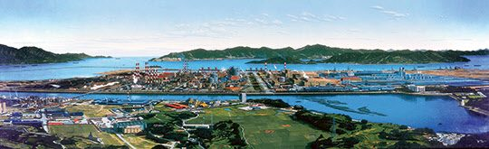
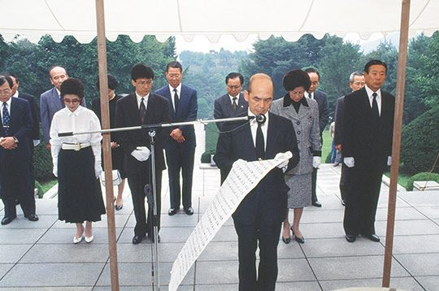

보도일 2015-06-01출처 조선일보 프리미엄조선 연재
1992년 10월 2일 늦은 오후, 박태준은 한 사람의 손님처럼 광양제철소를 떠났다. ‘철강 2100만 톤 대한민국’을 완성한 그가 반드시 찾아가야 할 곳은 서울에 있었다. 종합준공식에는 끝내 모습을 드러내지 않았던 그 사람을 찾아가기 위해 박태준은 먼저 서울 북아현동 자택으로 돌아왔다. 밤이 깊었다. 잠이 오지 않았다. 이따금씩 눈시울이 뜨끔거렸다. 그러나 아직 눈물을 맺을 때가 아니라고 그는 생각했다.

날이 밝았다. 10월 3일, 개천절. 한국 신문들은 기사 사설 칼럼으로 일제히 ‘포철 대역사의 대미’에 아낌없는 찬사와 격려를 보냈다. ‘포철 신화’를 통해 우리 국민은 뿌듯한 자부를 느낀다고 했다. 이렇게 좋은 날, 신문마다 온통 최상의 찬사를 쏟아낸 아침, 박태준은 하얀 와이셔츠에 검은 넥타이를 매고 검은 양복을 입었다. 반드시 가야 할 곳이 있었다. 자신의 진심을 들어줄 혼령이 기다리는 곳으로, 그는 가야만 했다.
이 골짜기에는 얼마나 숱한 영혼이 쉬고 있는가. 대한민국 현대사의 영욕을 침묵 속에서 웅변하는 어마어마하게 넓은 묘역, 서울 동작동 국립 현충원. 박태준은 박정희의 유택 앞에 섰다. 곁에 누운 육영수도 그의 육성을 들을 것이었다. 박태준 뒤에는 그의 부인 장옥자, 두 고인의 아들 지만과 딸 근영, 민정당 대표 박태준의 비서실장인 최재욱 의원 등 동행들이 묵념의 자세로 서 있었다. 박태준이 두루마리를 펼쳤다.
한지에 붓글씨로 쓴 보고문. 드디어 그는 눈물을 흘릴 수 있을 것 같았다. 목소리가 젖어도 좋을 것 같았다. 자신의 인격과 신념과 포부를 완전히 신뢰해준 한 사나이를, 그는 사무치게 그리워했다.
“각하! 불초 박태준, 각하의 명을 받은 지 25년 만에 포항제철 건설의 대역사를 성공적으로 완수하고 삼가 각하의 영전에 보고를 드립니다. 포항제철은 빈곤타파와 경제부흥을 위해서는 일관제철소 건설이 필수적이라는 각하의 의지에 의해 탄생되었습니다. 그 포항제철이 바로 어제, 포항·광양의 양대 제철소에 연산 조강 2100만 톤 체제의 완공을 끝으로 4반세기에 걸친 대장정을 마무리하였습니다.”
‘나는 임자를 잘 알아. 이건 아무나 할 수 있는 일이 아니야. 어떤 고통을 당해도 국가와 민족을 위해 자기 한몸 희생할 수 있는 인물만이 이 일을 할 수 있어. 아무 소리 말고 맡아!’

“1967년 어느 날, 영국 출장 도중 각하의 부르심을 받고 달려간 제게 특명을 내리시던 그 카랑카랑한 음성이 지금도 귓전에 생생합니다. 그 말씀 한마디에, 25년이란 긴 세월을 철에 미쳐 참으로 용케도 견뎌왔구나 생각하니, 솟구치는 감회를 억누를 길이 없습니다. 돌이켜보면, 참으로 형극과도 같은 길이었습니다.
자본도 기술도 경험도 없는 불모지에서 용광로 구경조차 해본 적 없는 39명의 창업요원을 이끌고 포항의 모래사장을 밟았을 때는 각하가 원망스럽기도 했습니다. 자본과 기술을 독점한 선진 철강국의 냉대 속에서 국력의 한계를 절감하고 한숨짓기도 했습니다. 터무니없는 모략과 질시와 수모를 받으면서 그대로 쓰러져버리고 싶었던 때도 있었습니다.
그때마다 저를 일으켜 세운 것은 ‘철강은 국력’이라는 각하의 불같은 집념, 그리고 13차례에 걸쳐 건설현장을 찾아주신 지극한 관심과 격려였다는 것을 감히 말씀드립니다. <
②편에계속